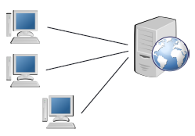
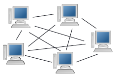
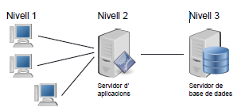
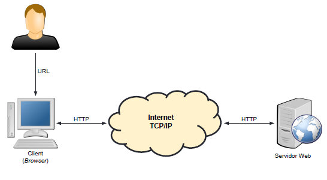

Introducción al entorno web
2ASIR - Implantación de aplicaciones web
Profesor: Roberto Tubilleja Calvo
Introducción
Día a día utilizamos aplicaciones web y cada vez con más frecuencia.
Así pues, la popularización de www y la de otros servicios de internet ha propiciado un cambio en la concepción de las aplicaciones tal y como las conocíamos.
Aplicaciones web VS tradicionales I
Todo y que cada vez utilizamos más aplicaciones web, hay muchos campos en los que aun prevalecen las aplicaciones de escritorio.
Ventajas del software web:
Multiplataforma: la mayoría de las aplicaciones web son multiplataforma. Tenemos 1 aplicación para todos los sistemas operativos.
Software: solo necesitamos un navegador web, no tenemos problemas de librerías, versiones de SO …
Aplicaciones web VS tradicionales II
Centralización: toda la información esta centralizada en los servidores. Fácil acceso y no repetición de la información.
Seguridad: las aplicaciones web suelen tener vulnerabilidades, pero el hecho de estar la información centralizada nos permite hacer copias de seguridad más efectivas.
Versiones: nos aseguramos siempre el acceso a la última versión de la aplicación.
Movilidad: podemos acceder desde cualquier lugar con ordenador, movil y conexión a la red.
Características de las aplicaciones web I
• Se ejecutan en un servidor (físico o virtual)
• Pueden atender a miles de usuarios simultáneos
◦Es habitual que varios servidores atiendan única aplicación web
▪escalabilidad y tolerancia a fallos
◦ Se ejecutan dentro de un servidor web
◦Formadas por código y por recursos (imágenes, documentos html, css, js,…)
Características de las aplicaciones web II
◦Utilizan servicios adicionales: bases de datos, servidor de correo, …
◦Requieren de un proceso de instalación y configuración (despliegue) en el servidor o servidores
Arquitecturas
En el mundo de Internet encontramos distintas arquitecturas, entre las cuales destacamos:
▪ Arquitectura cliente-servidor
▪ Arquitectura P2P
Cada arquitectura tiene sus características y estas la hacen adecuada para un determinado tipo de tareas.

Arquitectura cliente-servidor I
La capacidad de proceso esta dividida entre el cliente y el servidor.
El servidor no tiene porque ser únicamente una máquina, o bien no tiene porque ofrecer únicamente un servicio.
Hay distintos tipos de servidores, por ejemplo:
▪ Servidores de impresión
▪ Servidores web
▪ Servidores de ficheros
▪ Servidores DNS
▪ …

Arquitectura cliente-servidor II
• Cliente:
▪ Inicia solicitudes o peticiones (activo)
▪ Espera y recibe respuestas del servidor
▪ Puede conectarse a varios servidores a la vez
• Servidor:
▪Espera las peticiones de los clientes (pasivo)
▪Una vez recibida una petición, la procesa y contesta
▪Acepta peticiones de varios clientes
Arquitectura cliente-servidor III
• Ventajas:
▪ Centralización
▪ Escalabilidad
▪ Fácil mantenimiento
• Inconvenientes:
▪Congestión
▪Si el servidor cae, toda la información deja de ser accesible
Arquitectura P2P
A diferencia del modelo cliente-servidor, en la arquitectura Peer 2 Peer no existe un servidor central que ofrezca un servicio, sino que son los propios nodos los que lo ofrecen.
Cada nodo puede funcionar como cliente y como servidor y el enlace se hará directamente de un nodo a otro nodo.
Es utilizado en distintos tipos de software, pero sobretodo se ha hecho popular en el intercambio de ficheros.

Arquitectura de 3 niveles
En la arquitectura de 3 niveles entra en juego un nuevo componente. Esta compuesta por:
▪ Cliente
▪ Servidor de aplicaciones → proporciona los recursos solicitados con la ayuda del servidor de datos (aquí el servidor también es un cliente)
▪Servidor de datos → proporciona al servidor de aplicaciones los datos solicitados

Servidores web I
Un servidor web es un programa o conjunto de ellos que se encarga de procesar las peticiones HTTP que recibe. Utiliza la arquitectura cliente-servidor y el funcionamiento es el siguiente:
▪Espera peticiones por el puerto asignado (normalmente 80 para HTTP)
▪Cuando recibe una petición → procesa la información y busca el recurso que se le pide
▪Envía el recurso al cliente
La web en sus orígenes era estática. Hoy en día prácticamente todas las páginas web creadas tienen componentes dinámicos.
Servidores web II
Una página web estática es una serie de recursos que se encuentran en el servidor:
▪ HTML
▪ Imágenes
▪ Documentos
Estos recursos se pueden consultar o descargar.
En una página web dinámica partimos de una base estática acompañada de contenidos dinámicos, es decir, generados o calculados.
Ejemplo servidor web

Servidor web - Software
Competidores:
◦ Apache → Open Source
◦ IIS (Internet Information Services) → Privativo, de Microsoft
◦ Nginx → Open Source
Busca y compara las prestaciones de los diferentes servidores que hay en el mercado. Observa características como: multiplataforma, precio, requisitos mínimos, administración, etc.
Apache
• Open Source
• Multiplataforma
• Líder en el mercado
• Funcionalidad adicional mediante módulos:
‣PHP
‣SSL (comunicaciones seguras de red)
‣…
IIS
• Microsoft
• Integrado en Windows
• Soporte para las tecnologías de Microsoft
‣ASP.net
‣Front Page
‣…
Nginx
•Open Source
•Alto rendimiento: arquitectura asíncrona orientada a eventos
•Muy usado como proxy inverso y balanceador de carga
•Funcionalidad adicional mediante módulos:
‣PHP (mediante FastCGI)
‣SSL (comunicaciones seguras de red)
‣…
Fin de la unidad
Introducción al entorno web